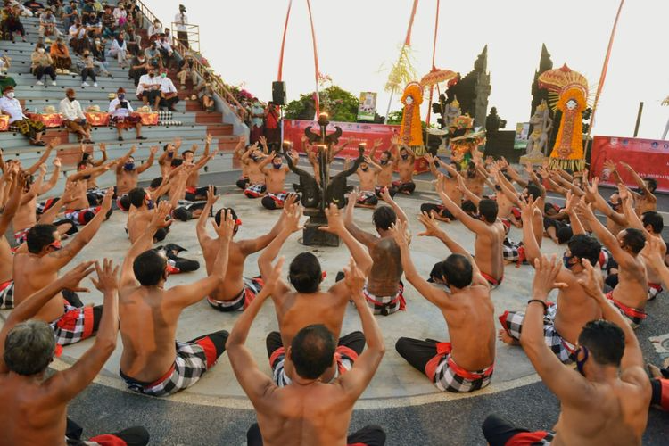
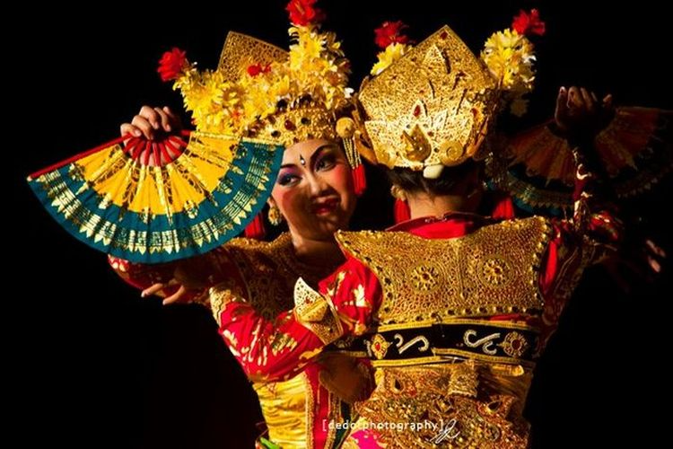

Sumatra
Nusa Tenggara
Maluku
Papua
Bali
Bali adalah sebuah wilayah provinsi yang terletak di Indonesia. Ibu kotanya adalah Denpasar. Provinsi Bali terletak di bagian barat Kepulauan Nusa Tenggara. Di awal kemerdekaan Indonesia, pulau ini termasuk dalam Provinsi Sunda Kecil yang beribu kota di Singaraja, dan kini terbagi menjadi 3 provinsi, yakni Bali, Nusa Tenggara Barat, dan Nusa Tenggara Timur. Pada tahun 2020, penduduk provinsi Bali berjumlah 4.317.404 jiwa, dengan kepadatan 747 jiwa/km2.
Informasi Umum
| Nama Provinsi | Kode Wilayah | Kode Internasional | Singkatan Umum | Ibu Kota | Hari Jadi | Lambang |
|---|---|---|---|---|---|---|
| Bali | 51 | ID-BA | - | Denpasar | 14 Agustus 1958 |  |
Budaya

Bale Gede adalah bangunan yang berbentuk persegi panjang dengan 12 tiang. Rumah ini memiliki fungsi sebagai tempat upacara adat. Jadi, karena fungsinya cukup sakral, bagian rumah adat ini harus memiliki ukuran yang jauh lebih besar dibanding bangunan lainnya. Sebab selain untuk ritual adat, Bale Gede juga dipakai untuk berkumpul dan menyajikan makanan khas Bali, termasuk pula untuk membakar sesaji.

Payas agung adalah pakaian tradisional masyarakat Bali. Payas agung ini biasanya dipakai ketika upacara pernikahan atau potong gigi. Pakaian ini memiliki kesan mewah dan spesial, maka dari itu payas agung tidak ditujukan untuk berbagai aktivitas. Payas agung dikenakan bersama mahkota yang menjulang tinggi dan kain dengan berbagai warna yang dipakai oleh pengantin perempuan. Pengantin perempuan juga memakai tapih panjang yang melilit dari dada hingga jari kaki. Kain ini lalu dilapisi oleh kemben dan kamen prada yang menutup sampai mata kaki.
Keindahan tari tradisional Bali tak hanya memesona wisatawan domestik namun juga tersohor hingga ke mancanegara

Tari Kecak menjadi salah satu tarian tradisional Bali yang telah terkenal hingga ke mancanegara. Tari Kecak berasal dari jenis tari sakral yaitu tari Sang Hyang yang digunakan untuk berkomunikasi dengan para dewa atau leluhur. Baru pada tahun 1930-an mulai disisipkan cerita epos Ramayana ke dalam pertunjukan Tari Kecak. Tari Kecak adalah jenis tari Bali yang paling unik karena tidak diiringi dengan alat musik seperti gamelan namun diiringi dengan suara para penarinya

Tari Legong merupakan salah satu tari tradisional yang indah dari Bali. Kata Legong berasal dari kata ‘leg’ yang artinya gerak tari yang luwes atau lentur dan ‘gong’ yang artinya gamelan. Tari Legong mengandung arti gerak tari yang terikat oleh irama gamelan yang mengiringinya. Gamelan yang dipakai mengiringi tari legong dinamakan Gamelan Semar Pagulingan. Tari Legong dikembangkan pada abad ke-19 yang mulanya ditarikan dua orang gadis yang ditarikan di bawah sinar bulan purnama di halaman keraton.
Bahasa Bali terdiri atas dua dialek, yaitu (1) dialek Bali Aga atau Bali Mula yang dituturkan oleh penduduk Bali di daerah dataran tinggi di Bali dan (2) dialek Bali Dataran yang dituturkan oleh penduduk yang pada umumnya berdiam di daerah dataran rendah di Bali.

Ngaben adalah upacara kremasi yang dilakukan oleh umat Hindu di Bali dan tergolong sebagai upacara Pitra Yadnya, yaitu upacara yang ditunjukkan kepada Leluhur. Kremasi sendiri adalah praktik penghilangan jenazah manusia setelah meninggal dengan cara dibakar.
Upacara Ngaben sendiri memiliki berbagai makna. Setelah jenazah dibakar dan abunya dihanyutkan ke sungai atau laut, memiliki makna melepaskan Sang Atma (roh) dari belenggu duniawi sehingga mudah bersatu dengan Tuhan. Selain itu, bagi pihak keluarga, upacara ini merupakan simbolisasi bahwa pihak keluarga telah ikhlas, dan merelakan kepergian yang bersangkutan.

Blakas atau Belakas adalah nama untuk senjata tajam mirip pisau daging dari Bali, Indonesia yang memiliki bilah berbentuk persegi empat dengan mata pisau lurus. Gagangnya berbentuk silindris dan sedikit mengecil di kedua ujungnya. Pada bilahnya sering terdapat bentuk-bentuk yang menarik dan pamor. Kadang-kadang dibuat untuk keperluan ritual, dan digunakan berpasangan dengan golok. Umumnya banyak keluarga Bali yang memiliki blakas karena alat ini digunakan sehari-hari untuk keperluan dapur, berkebun, dan aktivitas ritual keagamaan.

Musik tradisional Bali memiliki kesamaan dengan musik tradisional di banyak daerah lainnya di Indonesia, misalnya dalam penggunaan gamelan dan berbagai alat musik tabuh lainnya. Meskipun demikian, terdapat kekhasan dalam teknik memainkan dan gubahannya, misalnya dalam bentuk kecak, yaitu sebentuk nyanyian yang konon menirukan suara kera. Demikian pula beragam gamelan yang dimainkan, misalnya gamelan jegog, gamelan gong gede(gamelan jawa kuno), gamelan gambang, gamelan selunding dan gamelan Semar Pegulingan. Ada pula musik Angklung dimainkan untuk upacara ngaben serta musik Bebonangan dimainkan dalam berbagai upacara lainnya.
Lagu yang dibuat oleh I Gede Dharna menggambarkan perasaan suka cita yang dirasakan oleh remaja putera dan puteri yang tinggal di Bali. Lirik lagunya menggambarkan perasaan ceria dan bersemangat dan membuat orang bisa membayangkan suasana hangat di pedesaan Bali.
Kuliner

Ayam Betutu adalah makanan tradisional khas Bali yang terbuat dari ayam utuh yang berisi bumbu, kemudian dipanggang dalam api sekam. Ayam betutu merupakan jenis lauk pauk yang dibuat dari daging ayam yang telah dibersihkan, lalu dibalurkan bumbu khas Bali yang dikenal dengan "base genep" di seluruh permukaan daging ayam dan sebagian lagi dimasukkan ke dalam rongga abdomennya. Daging ayam yang telah dibumbui kemudian direbus atau langsung dibakar hingga menghasilkan aroma yang khas. Aroma yang muncul disebabkan karena adanya pemanasan yang menyebabkan air dan lemak daging ikut menguap. Semakin banyak uap yang dihasilkan, semakin kuat dan enak aromanya.
Destinasi Wisata

Monkey Forest Ubud merupakan paket wisata yang terbilang unik di kawasan Bali. Seperti namanya, di hutan yang sakral dan memiliki pura ini, terdapat ratusan kera. Setiap hari, kera yang dikeramatkan dan dijaga oleh penduduk lokal ini turun ke tanah dan berinteraksi dengan wisatawan yang datang. Hal utama yang menarik wisatawan datang dan memilih paket wisata Monkey Forest Ubud adalah berinteraksi dengan kera. Selain melakukan interaksi dengan kera, wisatawan juga bisa mengunjungi pura suci di dalam hutan.